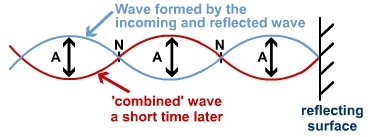

The Physics Behind Instruments
In the previous topic you observed the broad range of frequencies that are produced by everyday sounds (Fig 2.3). These are referred to as natural frequencies: the frequencies that are emitted from an object when it is disturbed in any way (hit, dropped, plucked, crumpled). An object's natural frequencies depend on the physical properties of the object.
However, most of these sounds are merely perceived as "noise," generally lacking any sort of musical quality. Then what exactly gives the vibration of air moving through a flute or the vibration of guitar strings a distinct musical/tonal quality? Let's dig a little deeper:
Sources of Vibration in Instruments
With a few exceptions, melodic instruments produce sound in two different ways:
• Stringed instruments cause air molecules around them to vibrate when plucked.
• Wind/brass instruments utilize a mouthpiece, allowing either a reed (like in an oboe or saxophone) or the musician's lips (in a trumpet or tuba) to vibrate rapidly, causing air to vibrate through a column of air.
• In terms of singing, the vocal chords are the source of vibration, causing vibrating air molecules to move outward through the throat similar to wind instruments.
Instruments are finely crafted in order to produce their natural frequencies, or harmonics (covered in a later section), accurately and consistently. There are several ways a musician can change the emitted frequency of an instrument. Remember that:
| frequency = | speed (v) |
| wavelength (λ) |
In a stringed instrument, the musician will place their finger down to shorten the wavelength of the vibration, causing an increase in frequency (and pitch). In addition, as a property of frequency, the linear density (material and thickness) and tension of each string on an instrument affect its natural frequency. These properties can be seen when comparing the pitch of the strings on a standup bass and a violin — the longer and thicker strings on the bass produce a much deeper, lower frequency than those on the violin.
In wind and brass instruments, the natural frequencies of vibration are controlled by the musician's tongue or lip technique. Therefore, the main method of changing pitch is done by altering the length of the column of air the vibrations must travel through. Every button and slide on brass and woodwind instruments open up valves that increase or decrease the length of this pathway.
Standing Waves
Now that you've learned what causes vibrations and pitch changes in instruments, let's examine the properties of instruments' natural frequencies, referred to as "harmonic frequencies."
Every instrument, when caused to vibrate, will create waves that travel away from the source of propagation. Eventually, some of these waves are reflected back toward the source either along the string or within the air column. This is because some waves bounce back upon reaching the ends of a string, or because of the pressure within the air column. When two waves of the same frequency and amplitude are travelling in opposite directions along the same medium, they undergo constructive and destructive interference (remember that?) that creates a special pattern called a standing wave.
In the animation above, the red and green waves represent the initial and reflected waves along a string or air column. The standing wave, shown in blue, is characterized by points called nodes and antinodes.
A node is a point on the standing wave where the amplitude always remains at zero due to destructive interference. Conversely, an antinode describes a point where the standing wave oscillates between its maximum and minimum amplitude due to constructive interference.
On a string bound on both ends, there are always two nodes (points of zero amplitude) located on these endpoints. Additionally, nodes are always located exactly half a wavelength apart; this is the same for antinodes. However, an antinode will always be found halfway between two nodes. Therefore, every quarter wavelength there will be a node or antinode.
Standing Wave Patterns and Harmonics
You've just seen why standing waves occur within instruments, but how exactly do they affect an instrument's tonal quality?
As briefly discussed earlier, every instrument produces a series of harmonic frequencies when a note is sounded. The frequencies emitted by the instrument are described by several patterns of standing waves.
The image above represents the standing wave patterns, or harmonic series, of a string bound on both ends.
When a string is plucked, the waves vibrating back and forth will line up precisely to produce standing waves of decreasing wavelength, referred to as harmonics. The frequency of the first harmonic is referred to as the fundamental frequency.
Each new harmonic has an additional half wavelength fit within the length of the string (along with an additional node and antinode). Since the length of the string is fixed, the string must be vibrating at a specific frequency for each standing wave of decreasing wavelength. Here is a chart to help illustrate these concepts (where f0 = fundamental frequency):
Harmonic # |
Wavelength (λ) |
Frequency (f) |
Number of Nodes |
Number of Antinodes |
| 1 | 2L | f0 | 2 | 1 |
| 2 | L | 2f0 | 3 | 2 |
| 3 | 2/3L | 3f0 | 4 | 3 |
| 4 | 1/2L | 4f0 | 5 | 4 |
| n | 2/nL | nf0 | 1 + n | n |
The relationship between harmonic number and frequency fn = nf0 is what allows us to calculate the frequencies of every harmonic a single note makes when sounded.
Let's observe this in action - below is a video of a variety of instruments playing middle C (C4). The fundamental frequency (f0) is 261 Hz; therefore, we will be able to see spikes in frequency at the values that are integer multiples of 261Hz (~522Hz, 1044Hz, 2088Hz etc).